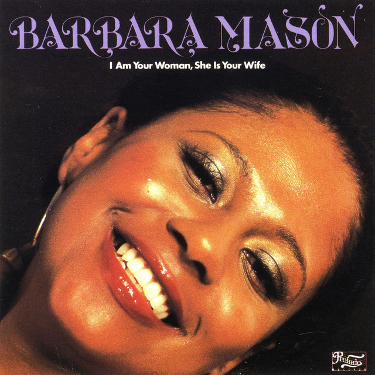

Barbara Mason - I Am Your Woman She Is Your Wife



Información del álbum facilitada por discogs.com:
Fecha de lanzamiento: 1978
Géneros: Funk / Soul
Estilos: Soul, Disco
Pais: Italy
Votos: Media de 3.67 con 3 votos
Sello: Streetlab Records
Tracklist:
A1. Darling Come Back Home (feat. Frank Wilson & Kathy Wakefield & King Errisson) 4:44
A2. More Of You (feat. Barbara Mason & Frankie Smith) 5:39
A3. Take Me Tonight (feat. Weldon Arthur McDougal III) 6:39
A4. It Was You Boy (feat. Dennis Rogers) 3:59
B1. I Am Your Woman, She Is Your Wife (feat. Weldon Arthur McDougal III) 5:32
B2. I Don’t Want No Other Love (feat. Michael Darby (2) & Michael Troutman (2) & Weldon Arthur McDougal III) 4:02
B3. Joy In My Mind (feat. Dennis Rogers) 5:04
B4. So Good (feat. Frankie Smith & Joseph Jefferson) 2:58